鍋割山
| 日付 | 2008年10月26日（日） |
|---|---|
| 山域 | 丹沢 |
| メンバー | グループ（男7女4） |
| 山行形態 | 日帰り |
| アクセス | 電車、タクシー、バス |
| ルート (Map) | 二俣→後沢乗越→鍋割山→小丸尾根→二俣→大倉 |
東丹沢のメジャーなピークはおおむね登ったが、鍋割山だけは未踏のまま残っていた。
塔ノ岳のすぐ隣にある山だが、展望が非常に良いということで、行ってみることにする。
8:53 タクシーで四十八瀬川二俣まで移動。標高530m。
タクシーを降りたときはかなり雨が降っていたが、準備をしているうちに止んでしまった。
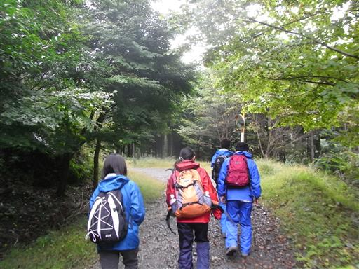
急な尾根道を登っていく。
アクセスが少々不便なところだからか、周りに歩いている人は少ない。
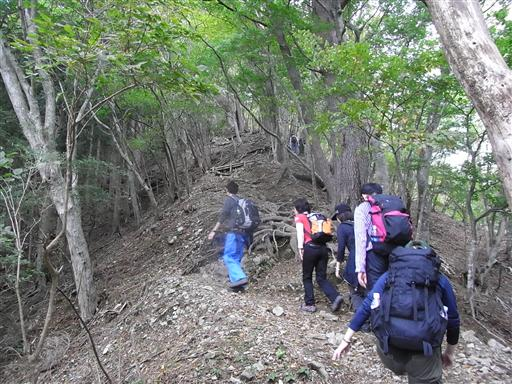
大きな実がなっている。
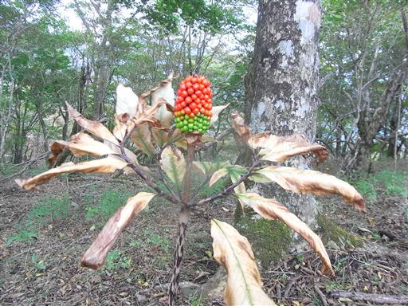
標高を上げていくと、少し葉も色づいてきた。
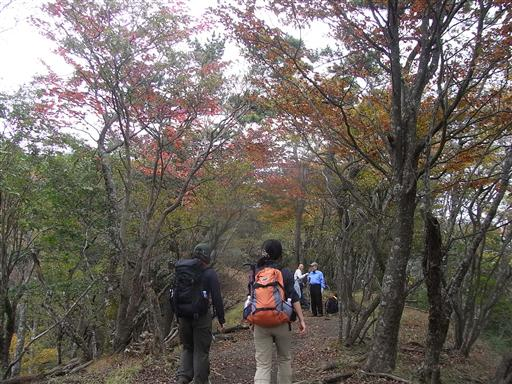
11:08 鍋割山山頂到着。標高1273m。
頂上には鍋割山荘が建つ。
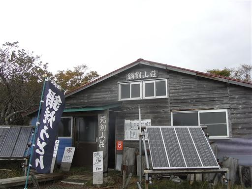
山頂からの展望。遠くに相模湾が見える。
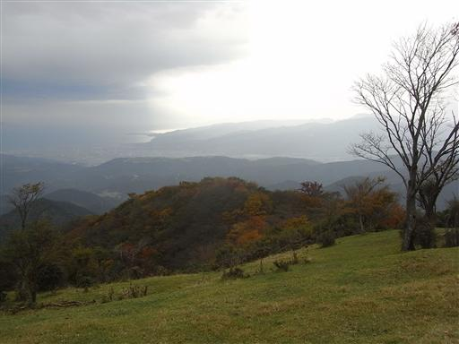
丹沢の山並の向こう側には富士山が見えているが、
残念ながら裾野しか見えず、山頂部は雲に隠れている。

鍋割山荘の名物・鍋焼きうどんを食べる。
そろそろ寒い時期になってきたので、温かい食べ物が非常においしい。
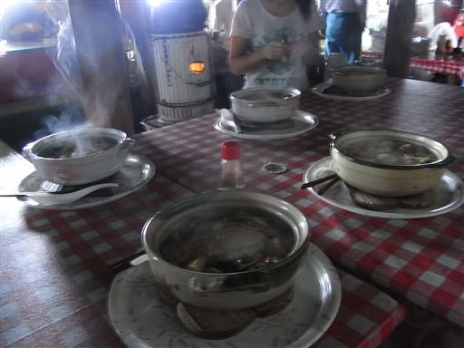
山頂を出発する。
今回は塔ノ岳にも寄っていく予定だったが、
ルートが長くなるので、そのまま下山することにする。
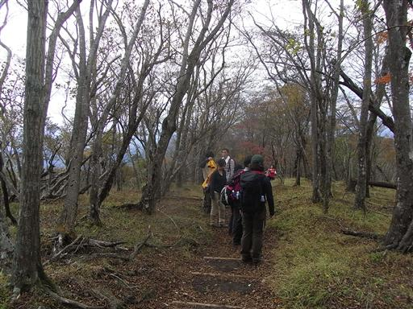
山頂付近はだいぶ紅葉が進んでいる。
もうあと1、2週間で見頃を迎えそうだ。
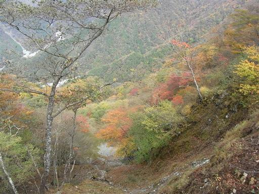
間近には丹沢主脈の蛭ヶ岳、丹沢山が聳えている。
大して標高は高くないのだが、高山の雰囲気がある。
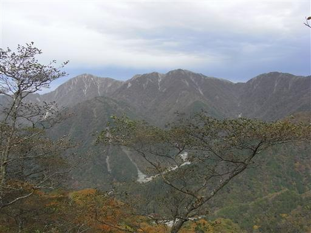
下山道は所々で展望が開ける。
大倉バス停に下山。
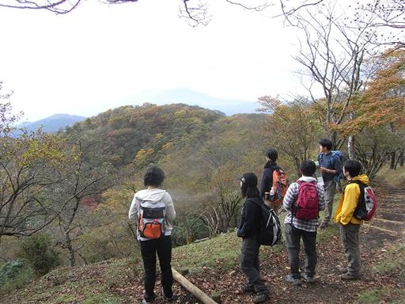
他の山行記録